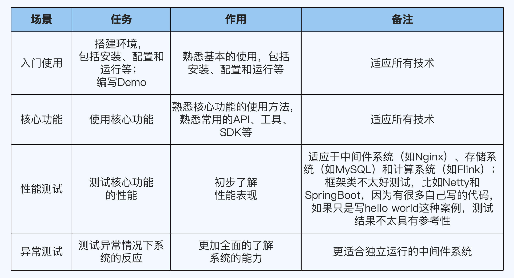
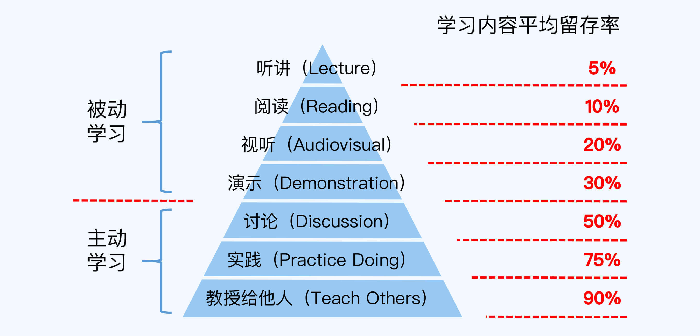
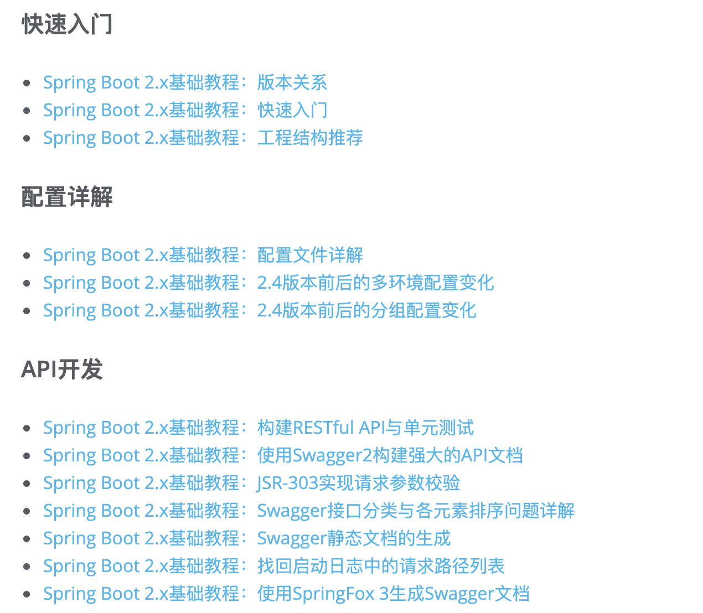
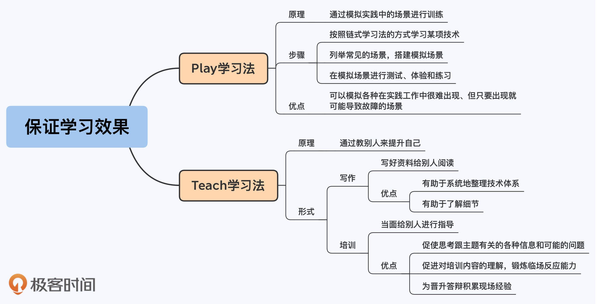

20 | Play & Teach：怎么摆脱“从入门到忘记”的学习困境？
你好，我是华仔。
上一讲我们学到了，针对不同技术维度的学习目标，可以分别采用不同的学习方法。
不过就算你用对了方法，在学习过程中往往还是会遇到一些难以解决的困难，导致学习变成了“从入门到忘记”。
那么，怎么摆脱这种的学习困境，保证学习效果呢？这一讲我会为你介绍两种方法。
Play学习法
从科学学习的角度来看，学以致用的效果是最好的，光学不练学得不深，时间一长可能就忘记了。
但我们在实践中会遇到一个常见的困难，那就是团队当前的工作任务当中并没有相关的实践机会。这种情况下，你学习某个技术就会陷入两难的困境：如果学的话，得不到实践，学得不深；如果不学的话，真的要用的时候又来不及了。
这时候怎么办呢？完全放弃肯定是不可取的，因为机会都是留给有准备的人，如果来了一个新的任务正好要用到某个技术，到时候肯定是团队内谁有准备就安排谁，不会等到某个人学习完了再安排任务给他。
所以，我们需要找到一种方法，在暂时没有实践机会的情况下也能学好技术，这就是Play学习法。
所谓Play学习法，就是通过模拟实践中的场景来进行学习和训练。
华盛顿国家儿童博物馆有一句著名的馆训：What I hear, I forget. What I see, I remember. What I do, I understand.
Play学习法就是主动创造Do的机会来提升自己对新技能的理解和记忆。
如果你喜欢看动物世界之类的节目，应该有这样的印象：狮子这类肉食动物，在成年以前特别喜欢玩耍打闹，这并不是贪玩，而是在练习捕猎的技巧，为成年后的真实捕猎做好部分准备。
Play学习法就和肉食动物的这种玩耍学习非常像。它的做法比较简单，主要分为三个步骤：
- 按照链式学习法的方式学习某项技术。
- 列举常见的场景，搭建模拟场景。
- 在模拟场景进行测试、体验和练习。
常见的模拟场景以及相应的作用如下表所示：

Play学习法不但能够让你在没有实践机会的时候，也能够比较好地掌握一项技术，而且它跟直接在工作中实践的学习方式相比，还有一个独特的优势：你可以模拟各种在实践工作中很难出现、但只要出现就可能导致故障的场景。
比如为了验证ZooKeeper的集群选举功能，模拟的时候可以采取拔网线、直接杀进程、删除存储文件等各种非常规的手段。
这些手段在线上运行肯定不敢手动去搞，甚至就算在开发阶段的测试环境中也不敢随便搞，因为一旦搞挂了恢复不了，就有可能导致项目延期，个人会需要承担责任。
而如果采用Play学习法的话，我们就可以通过模拟场景来积累相关的经验和技能，等到线上真正出现类似问题的时候就能够快速地处理。
Play学习法能够帮助我们更好的学习技术，但这并不意味着它能够完全取代工作中的实践，工作中的实践仍然是非常重要的提升自己的方式。
这就像小狮子光是通过玩耍打闹，还不能完全熟练地掌握捕猎技巧一样，年轻的狮子刚开始的捕猎的时候，成功率都是很低的。要成为真正的捕猎能手，还需要很多次实战的磨练。
如果说精通一项技术是100分的话，通过链式学习法你可以达到60分，通过Play学习法你可以达到70甚至80分，但如果想达到80分以上，实践是必不可少的。
Play学习法小结
现在，我们回顾一下Play学习法的重点：
- Play学习法是通过模拟实践中的场景进行训练。
- Play学习法的步骤包括：按照链式学习法的方式学习某项技术；列举常见的场景，搭建模拟场景；在模拟场景进行测试、体验和练习。
- Play学习法的独特优势在于，可以模拟各种在实践工作中很难出现、但只要出现就可能导致故障的场景。
Teach学习法
除了缺少实践机会之外，我们在学习的时候还会遇到另一个常见的困难，那就是学得不深，理解不够透彻。
很多人都有类似的经历：自己学习某项技术的时候感觉学的差不多了，甚至都已经在工作中具体实践了，但是一旦跟别人讨论，或者在晋升的时候面对评委的提问，又会感觉很多东西都没有完全掌握。
这种现象背后的原因是，每个人的知识和技能都是有一定局限性的，不同的人理解会不一样，关注点会不一样，所以在讨论或者PK的时候自然会遇到各种各样的问题。就算你有实践机会，也不太可能一两次就把一项技术相关的知识全部用到，总会有认知的盲区存在。

我想你肯定不希望自己在晋升答辩的时候连自己熟悉的内容都回答不好。那要怎么办呢？Teach学习法就可以帮助你加深理解。
所谓Teach学习法，就是通过教别人来提升自己。
- 印度有句谚语：To learn，read. To know，write. To master，teach.
- 中国也有一句成语：教学相长。
结合这些智慧，我们可以总结出学习的四个主要方法：Read、Write、Do、Teach。前面介绍的Play学习法是关于Do的，而Teach学习法对应的则是Write和Teach。
我之所以把Write也算作Teach学习法的一部分，是因为教别人有两种方式，一种当面给别人进行培训，另一种是写成资料给别人阅读，比如书籍和在线课程。
所以，Teach学习法包括两种形式，写作和培训。
写作
很多人一听到“写作”两个字，第一反应就是要有文学天分，自己没有文学天分，所以文章就写不好，这其实是一个很大的误区。
技术文章的写作不是文学创作，不需要优美的文笔和有吸引力的情节，看技术文章的读者关注的也不是文字是否优美，情节是否吸引人，而是讲得清不清楚，讲得对不对。
如果你想写一篇技术文章，但是感觉不知道怎么写，那主要的原因不是不会写文章，而是还没有完整地掌握这个技术，不知道哪些是重点，不了解整个体系，对体系里面的各个部分的协作关系不清楚。
那么，是不是一定要等到把某个技术彻底搞明白后才能动笔呢？其实不需要，因为写作本身就是帮助我们学习和梳理的一个过程。比如我在写《从零开始学架构》这本书的时候，并不是把书中的每个内容都研究得一清二楚了才开始动笔的，而是先有了一个整体的构思，然后在写作的过程中边写边完善，有的内容是突然灵感爆发加上去的。
写作对学习的帮助主要体现在以下两个方面：
第一，写作有助于系统地整理技术体系。
当你开始准备写作的时候，肯定需要思考整体的结构应该如何设计，而这个思考的过程其实就是整理技术体系的过程。比如知名博主程序猿DD的Spring Boot2.X教程的结构设计就清晰地反映出了他整理出来的技术体系。
只有当你脑海中形成了完整的技术体系，才能知道应该先讲什么，后讲什么；哪些是重点，哪些可以简单带过；是一篇文章讲完，还是讲一个系列。

第二，写作有助于了解细节。
写作看起来只是把自己知道的东西用文字表达出来，但其实你在写作的时候大脑无时不刻都在思考：
这是什么意思？
这样说对么？
这里要给别人讲么？
为什么要这么说？
怎么样才能表达清楚？
……
所以，写作可以让你主动思考各种细节，一旦发现有疑问的地方，就会停下来去查证和研究。
我在写CAP原理相关的内容之前，也觉得自己在这方面已经理解得很清楚了，但是真正写的时候，看到“All nodes see the same data at the same time”这句话，却自然而然地产生了一个疑惑：
通过网络复制总会有时间差，就算是1ms差异，那也不满足“at the same time”的说法，那么这里为什么这么说呢？
经过研究和查证，我才了解到这里的说法确实不严谨。第一个原因是，在事务执行过程中，节点间的数据是不一致的，第二个原因是，CAP定理是忽略了网络延迟的（参考《CAP 理论十二年回顾："规则"变了》）。
等到我在写这一讲，介绍这个例子的时候，又想到了第三个可能的原因：CAP同时也忽略了复制的代价，比如将1K数据从A节点传输到B节点，B节点将1K数据写入存储也是需要时间的。
当然，绝大部分相关技术在网络上已经有很多文章了，那我们直接搜一篇看不是更香吗？为何非得要自己费时费力来写类似的内容呢？
原因在于，当我们看别人写的内容时，我们采取的方式其实是“read”，能吸收的可能只有30～50%，而自己写出来的话，即使内容是类似的，也能够让自己对技术的掌握程度达到60～70%。
可是，写作是需要投入时间的。如果每一项技术我们都用写文章的方式来学的话，时间确实会不够用。那么，哪些技术应该自己写文章，哪些技术可以通过看书或者上网搜文章来学习呢？
核心的指导原则就是，看技术和自己工作的相关度，对于强相关的核心技术，自己写文章来学；而对于弱相关的非核心技术，可以通过阅读资料来学习。
比如，对Java服务端开发来说，JVM垃圾回收就是强相关的技术，而Linux系统编程就是弱相关的技术；而如果是在Linux平台用C/C++开发的话，Linux系统编程就是强相关的技术，Java的技术就是弱相关的技术。
培训
写作的时候，我们没有时间要求，没有现场压力，一句没写好可以重写，今天写不出来可以等到明天再写。
但是培训就不同，培训的时间是有限的，有现场压力，听众可能会提出各种意想不到的问题，所以培训对你的能力要求更高，但是锻炼效果也更好。
首先，要完成一场培训，你需要写培训材料。培训材料的准备过程就是一个写作的过程，写PPT这类培训材料，跟写Word文档比起来，也更能够锻炼你的总结、归纳和提炼的能力。写作带给你的帮助，培训也可以提供。
其次，培训需要你在有限的时间内讲清楚一个主题，你必须对这个主题掌握到一定的程度才可以做到，这就会强迫你去思考跟主题有关的各种信息和可能的问题；
另外，培训过程中，你会和听众进行各种交流，这些交流本身既能够促进你对培训内容的理解，也能够锻炼你的临场反应能力。
除了以上这些作用，培训还有一个好处是其他所有学习方法都不具备的，那就是为晋升答辩积累现场经验。
很多人晋升答辩失败，临场表现差也是一个重要的原因，比如说话紧张，讲PPT的时候忘词，问答的时候没有听明白评委问题就急于回答等等。
有的人归结于自己天生口才不行，心理承压能力太差，其实没有那么严重，毕竟晋升答辩不是TED演讲，评委也不是来看脱口秀的。答辩的临场表现不过关，主要还是因为平时缺少训练。
我之前带团队的时候，对于手底下准备申请晋升的人，我基本上都会强制要求他们做几次培训。通过这种方式训练3～4次以后，他们就很少在答辩的时候出现因为表达和临场发挥的问题而失败了。就算还是有一点点紧张，但因为之前通过培训锻炼了心理素质，所以不会影响到答辩效果。
Teach学习法小结
现在，我们回顾一下Teach学习法的重点：
- Teach学习法是通过教别人来提升自己。
- Teach学习法包括两种形式，写作和培训。
- 写作有助于系统地整理技术体系和了解细节。
- 培训具备写作的优点之外，还能够强迫你去思考跟主题有关的各种信息和可能的问题，促进你对培训内容的理解，锻炼你的临场反应能力，为晋升答辩积累现场经验。

思考题
这就是今天的全部内容，留一道课后思考题给你吧。你是否有过“从入门到放弃”的学习经历？你觉得主要原因是什么？是否可以应用这一讲的哪个方法来改进？
欢迎你把答案写到留言区，和我一起讨论。相信经过深度思考的回答，也会让你对知识的理解更加深刻。